건설재료시험기사 (2017-05-07 기출문제)
1과목: 콘크리트공학
1. 프리스트레스트 콘크리트의 특징으로 틀린 것은?
- 철근콘크리트에 비하여 고강도의 콘크리트와 강재를 사용한다.
- 철근콘크리트에 비하여 탄성적이고 복원성이 크다.
- 철근콘크리트 보에 비하여 복부의 폭을 얇게 할 수 있어서 부재의 자중이 경감된다.
- 철근콘크리트에 비하여 강성이 크므로 변형 및 진동이 작다.
(정답률: 73%)

2. 한중콘크리트에 대한 설명으로 틀린 것은?
- 하루의 평균기온이 10℃ 이하가 예상되는 조건일 때는 한중콘크리트로 시공하여야 한다.
- 한중콘크리트에는 공기연행 콘크리트를 사용하는 것을 원칙으로 한다.
- 재료를 가열할 경우 시멘트는 어떠한 경우라도 직접 가열할 수 없다.
- 기상조건이 가혹한 경우나 부재두께가 얇을 경우에는 타설할 때의 콘크리트 최저 온도는 10℃정도를 확보하여야 한다.
(정답률: 64%)
3. 콘크리트 양생 중 적절한 수분공급을 하지 않은 경우 발생할 수 있는 결함은?
- 초기 건조균열이 발생한다.
- 콘크리트의 부등침하에 의한 침하수축균열이 발생한다.
- 시멘트, 골재입자 등이 침하함으로써 물의 분리 상승 정도가 증가한다.
- 블리딩에 의하여 콘크리트 표면에 미세한 물질이 떠올라 이음부 약점이 된다.
(정답률: 79%)
4. 초음파법에 의한 균열깊이 평가방법이 아닌 것은?
- T법
- Tc-To법
- BS법
- Pull-off법
(정답률: 70%)
5. 아래의 표에서 설명하는 워커빌리티(반죽질기)의 측정방법은?
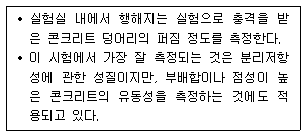
- 슬럼프 시험(slump test)
- 구 관입시험(Kelly ball test)
- 흐름 시험(flow test)
- 블리딩 시험(bleeding test)
(정답률: 63%)
6. 믹서로 콘크리트를 혼합하는 경우 콘크리트의 혼합시간과 압축강도, 슬럼프 및 공기량의 관계를 설명한 것으로 틀린 것은?
- 혼합시간이 짧으면 압축강도가 작을 우려가 있다.
- 혼합시간을 너무 길게 하면 골재가 파쇄되어 강도가 저하될 우려가 있다.
- 어느 정도 이상 혼합하면 소정의 슬럼프가 얻어지며 추가의 혼합에 의한 슬럼프의 변화는 크지 않다.
- 공기량은 적당한 혼합시간에서 최소값을 나타내며 혼합시간이 길어지면 다시 증가하는 경향이 있다.
(정답률: 61%)
7. 일반 콘크리트의 배합에서 물-결합재비에 대한 설명으로 틀린 것은?
- 물-결합재비는 소요의 강도, 내구성, 수밀성, 균열저항성 등을 고려하여 정하여야 한다.
- 제빙화학제가 사용되는 콘크리트의 물-결합재비는 55% 이하로 한다.
- 콘크리트의 수밀성을 기준으로 물-결합재비를 정할 경우 그 값은 50% 이하로 한다.
- 콘크리트의 탄산화 저항성을 고려하여 물-결합재비를 정할 경우 55% 이하로 한다.
(정답률: 61%)
8. 콘크리트 시방배합설계 계산에서 단위골재의 절대용적이 689 이고, 잔골재율이 41%, 굵은골재의 표건밀도가 2.65g/cm3일 경우 단위굵은골재량은?
- 739kg
- 1,021kg
- 1,077kg
- 1,137kg
(정답률: 69%)
9. 프리스트레스트 콘크리트에 있어서 프리스트레싱을 할 때의 콘크리트의 압축강도는 프리스트레스를 준 직후 콘크리트에 일어나는 최대압축 응력의 최소 몇 배 이상이어야 하는가?
- 1.3배
- 1.5배
- 1.7배
- 2.0배
(정답률: 75%)
10. 거푸집 및 동바리 구조계산에 대한 설명으로 틀린 것은?
- 고정하중은 철근 콘크리트와 거푸집의 중량을 고려하여 합한 하중이며, 콘크리트의 단위 중량은 철근의 중량을 포함하여 보통 콘크리트에서는 24kN/m3을 적용한다.
- 활하중은 구조물의 수평투영면적(연직방향으로 투영시킨 수평면적)당 최소 2.5kN/m2 이상으로 하여야 한다.
- 고정하중과 활하중을 합한 연직하중은 슬래브 두께에 관계없이 최소 5.0kN/m2 이상을 고려하여 거푸집 및 동바리를 설계하여야 한다.
- 목재 거푸집 및 수평부재는 집중하중이 작용하는 캔틸레버보로 검토하여야 한다.
(정답률: 51%)
11. 일반 콘크리트의 비비기에 대한 설명으로 틀린 것은?
- 연속믹서를 사용할 경우, 비비기 시작 후 최초에 배출되는 콘크리트는 사용하지 않아야 한다.
- 비비기 시간에 대한 시험을 실시하지 않은 경우 가경식 믹서일 때에는 1분 이상 비비는것을 표준으로 한다.
- 비비기는 미리 정해둔 비비기 시간의 3배 이상 계속하지 않아야 한다.
- 비비기를 시작하기 전에 미리 믹서 내부를 모르타르로 부착시켜야 한다.
(정답률: 75%)
12. 매스 콘크리트를 시공할 때는 구조물에 필요한 기능 및 품질을 손상시키지 않도록 온도 균열 제어를 통해 균열발생을 제어하여야 한다. 이러한 온도균열 발생에 대한 검토는 온도 균열지수에 의해 평가한다. 아래의 조건에서 재령 28일에서의 온도균열지수는? (단, 보통포틀랜드 시멘트를 사용한 경우)(오류 신고가 접수된 문제입니다. 반드시 정답과 해설을 확인하시기 바랍니다.)
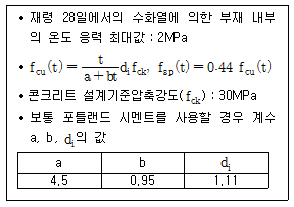
- 0.8
- 1.0
- 1.2
- 1.4
(정답률: 49%)
13. 23회의 시험실적으로부터 구한 압축강도의 표준편차가 4MPa이었고, 콘크리트의 설계 기준압축강도가 30MPa일 때 배합강도는? (단, 시험횟수가 20회인 경우 표준편차의 보정계수는 1.08이고 25회인 경우는 1.03)
- 34.4MPa
- 35.7MPa
- 36.3MPa
- 38.5MPa
(정답률: 67%)
14. 콘크리트 재료에 염화물이 많이 함유되어 시공할 구조물이 염해를 받을 가능성이 있는 경우에 대한 조치로서 틀린 것은?
- 물-결합재비를 작게 하여 사용한다.
- 충분한 철근피복두께를 두어 열화에 대비한다.
- 가능한 균열폭을 작게 만든다.
- 단위수량을 늘려 염분을 희석시킨다.
(정답률: 71%)
15. 콘크리트의 내구성 향상 방안으로 옳지 않은 것은?
- 알칼리금속이나 염화물의 함유량이 많은 재료를 사용한다.
- 내구성이 우수한 골재를 사용한다.
- 물-결합재비를 될 수 있는 한 적게 한다.
- 목적에 맞는 시멘트나 혼화재료를 사용한다.
(정답률: 81%)
16. 경량골재 콘크리트에 대한 설명으로 틀린 것은?
- 골재의 전부 또는 일부를 인공 경량골재를 써서 만든 콘크리트로서 기건 단위질량이 1,400∼2,000kg/m3인 콘크리트를 말한다.
- 경량골재 콘크리트는 공기연행제를 사용하지 않는 것을 원칙으로 한다.
- 경량골재를 건조한 상태로 사용하면 콘크리트의 비비기 및 운반 중에 물을 흡수하므로이 흡수를 적게 하기 위해 골재를 사용하기 전에 미리 흡수시키는 조작이 필요하다.
- 슬럼프는 일반적인 경우 대체로 50∼180mm를 표준으로 한다.
(정답률: 64%)
17. 콘크리트 배합에 관한 일반적인 설명으로 틀린 것은?
- 콘크리트를 경제적으로 제조한다는 관점에서 될 수 있는 대로 최대 치수가 작은 굵은골재를 사용하는 것이 유리하다.
- 고성능 공기연행감수제를 사용한 콘크리트의 경우로서 물-결합재비 및 슬럼프가 같으면, 일반적인 공기연행감수제를 사용한 콘크리트와 비교하여 잔골재율을 1∼2%정도 크게 하는 것이 좋다.
- 공사 중에 잔골재의 입도가 변하여 조립률이 ±0.20 이상 차이가 있을 경우에는 워커빌리티가 변화하므로 배합을 수정할 필요가 있다.
- 유동화 콘크리트의 경우, 유동화 후 콘크리트의 워커빌리티를 고려하여 잔골재율을 결정할 필요가 있다.
(정답률: 65%)
18. 콘크리트 압축강도 시험에서 하중은 공시체에 충격을 주지 않도록 똑같은 속도로 가하여야 한다. 이 때 하중을 가하는 속도는 압축 응력도의 증가율이 매초 얼마가 되도록 하여야 하는가?
- 0.2∼1.0MPa
- 1.2∼2.0MPa
- 2.0∼2.6MPa
- 2.8∼3.4MPa
(정답률: 61%)
19. 콘크리트 재료 계량의 허용오차에 대한 설명으로 옳은 것은?
- 혼화재의 계량 허용오차는 ±2%이다.
- 혼화제의 계량 허용오차는 ±2%이다.
- 골재의 계량 허용오차는 ±2%이다.
- 시멘트의 계량 허용오차는 ±2%이다.
(정답률: 67%)
20. 길모아 장치에 의한 시험은 무엇을 알기 위한 시험인가?
- 시멘트 분말도
- 시멘트 응결시간
- 시멘트 팽창도
- 시멘트 비중
(정답률: 73%)
2과목: 건설시공 및 관리
21. 그림과 같은 단면으로 성토 후 비탈면에 떼붙임을 하려고 한다. 성토량과 떼붙임 면적을 계산하면? (단, 마구리면의 떼붙임은 제외함)
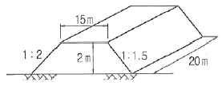
- 성토량：370m3, 떼붙임 면적：61m2
- 성토량：740m3, 떼붙임 면적：161m2
- 성토량：740m3, 떼붙임 면적：61m2
- 성토량：370m3, 떼붙임 면적：161m2
(정답률: 57%)
22. 옹벽의 수평 저항력을 증가시키기 위해 경제성과 시공성을 고려할 경우 다음 중 가장 적합한 방법은?
- 옹벽의 비탈구배를 크게 한다.
- 옹벽 전면에 Apron를 설치한다.
- 옹벽 기초밑판에 돌기 Key를 설치한다.
- 옹벽 배면에 Anchor를 설치한다.
(정답률: 76%)
23. 필댐의 특징에 대한 설명으로 틀린 것은?
- 제체 내부의 부등침하에 대한 대책이 필요하다.
- 제체의 단위면적당 기초지반에 전달되는 응력이 적다.
- 여수로는 댐 본체와 일제가 되므로 경제적으로 유리하다.
- 댐 주변의 천연재료를 이용하고 기계화 시공이 가능하다.
(정답률: 61%)
24. 흙쌓기 재료로서 구비해야 할 성질 중 틀린 것은?
- 완성 후 큰 변형이 없도록 지지력이 클 것
- 압축침하가 적도록 압축성이 클 것
- 흙쌓기 비탈면의 안정에 필요한 전단강도를 가질 것
- 시공기계의 Trafficability가 확보될 것
(정답률: 73%)
25. 공정관리 수법중 Net work 공정의 특징에 관한 설명으로 옳지 않은 것은?
- 간단하게 작성할 수 있다.
- 합리적으로 설득성이 있다.
- 중점적으로 관리할 수 있다.
- 전체와 부분의 관계가 명백하다.
(정답률: 68%)
26. TBM(Tunnel Boring Machine)공법을 이용하여 암석을 굴착하여 터널단면을 만들려고 한다. TBM 공법의 단점을 아닌 것은?
- 설비투자액이 고가이므로 초기 투자비가 많이 든다.
- 본바닥 변화에 대하여 적용이 곤란하다.
- 지반에 따라 적용범위에 제약을 받는다.
- lining 두께가 두꺼워야 한다.
(정답률: 65%)
27. 다음 중 흙의 지지력 시험과 직접적인 관계가 없는 것은?
- 평판재하시험
- CBR 시험
- 표준관입시험
- 정수위 투수시험
(정답률: 69%)
28. 시멘트 콘크리트 포장에 대한 설명으로 틀린 것은?
- 무근 콘크리트 포장(JCP)은 콘크리트를 타설한 후 양생이 되는 과정에서 발생하는 무분별한 균열을 막기 위해서 줄눈을 설치하는 포장이다.
- 철근콘크리트 포장(JRCP)은 줄눈으로 인한 문제점을 해소하고자 줄눈의 개수를 줄이고, 철근을 넣어 균열을 방지하거나 균열 폭을 최소화하기 위한 포장이다.
- 연속 철근콘크리트 포장(CRCP)은 철근을 많이 배근하여 종방향 줄눈을 완전히 제거하였으나, 임의 위치에 발생하는 균열로 인하여 승차감이 불량한 단점이 있다.
- 롤러 전압 콘크리트 포장(RCCP)은 된비빔 콘크리트를 롤러 등으로 다져서 시공하며 건조수축이 작아 표면처리를 따로 할 필요가 없는 장점이 있으나, 포장 표면의 평탄성이 결여되는 등의 단점이 있다.
(정답률: 54%)
29. 폭우 시 옹벽 배면의 흙은 다량의 물을 함유하게 되는데 뒷채움 토사에 배수 시설이 불량할 경우 침투수가 옹벽에 미치는 영향에 대한 설명으로 틀린 것은?
- 포화 또는 부준포화에 의한 흙의 무게 증가
- 활동면에서 양압력 발생
- 수동저항(passive resistance)의 증가
- 옹벽저면에 대한 양압력 발생으로 안정성 감소
(정답률: 73%)
30. 샌드드레인(sand drain) 공범에서 영향원의 지름을 e, 모래말뚝의 간격을 d라 할 때 정사각형의 모래말뚝 배열 식으로 옳은 것은?
- de ＝1.13d
- de ＝1.10d
- de ＝1.⑤d
- de ＝1.03d
(정답률: 74%)
31. 다짐유효 깊이가 크고 흙덩어리를 분쇄하여 토립자를 이동 혼합하는 효과가 있어 함수비 조절 및 함수비가 높은 점토질의 다짐에 유리한 다짐기계는?
- 탬핑롤러
- 진동롤러
- 타이어롤러
- 머캐덤롤러
(정답률: 68%)
32. 착암기로 사암을 착공하는 속도를 03m/min라 할 때 2m 깊이의 구멍을 10개 뚫는데 걸리는 시간은? (단, 착암기 1대를 사용하는 경우)
- 20분
- 66.6분
- 220분
- 666분
(정답률: 70%)
33. 100,000m3의 성토공사를 위하여 L=1.2, C=0.8인 현장 흙을 굴착 운반하고자 한다. 운반 토량은?
- 120,000m3
- 125,000m3
- 145,000m3
- 150,000m3
(정답률: 68%)
34. 오픈 케이슨기초에 대한 설명으로 틀린 것은?
- 다른 케이슨기초와 비교하여 공사비가 싸다.
- 굴착시 히빙이나 보일링 현상의 우려가 있다.
- 침하깊이에 제한을 받는다.
- 케이슨 저부 연약토 제거가 확실하지 않고, 지지력 및 토질상태 파악이 어렵다.
(정답률: 54%)
35. 아래 표와 같은 조건에서 불도저 운전 1시간당의 작업량(본바닥의 토량)은?
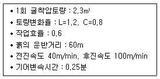
- 19.72m3/h
- 28.19m3/h
- 29.36m3/h
- 44.04m3/h
(정답률: 55%)
36. 교량의 구조에 따른 분류 중 아래의 표에서 설명하는 교량 형식은?
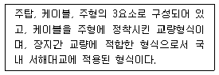
- 사장교
- 현수교
- 아치교
- 트러스교
(정답률: 68%)
37. 운동장, 광장 등 넓은 지역의 배수방법으로 적당한 것은?
- 개수로 배수
- 암거 배수
- 지표 배수
- 맹암거 배수
(정답률: 75%)
38. 장약공 주변에 미치는 파괴력을 제어함으로써 특정방향에만 파괴효과를 주어 여굴을 적게 하는 등의 목적으로 사용하는 조절폭파공법의 종류가 아닌 것은?
- 라인 드릴링
- 벤치 컷
- 쿠션 블라스팅
- 프리스플리팅
(정답률: 66%)
39. 아스팔트 포장에서 다짐도, 다짐 후의 두께 재료분리, 부설 및 다짐방법 등을 검토하기 위하여 시험포장을 하여야 하는데 적당한 면적으로 옳은 것은?
- 2,000m2
- 1,500m2
- 1,000m2
- 500m2
(정답률: 51%)
40. 1개마다 양ㆍ불량으로 구별할 경우 사용하나 불량률을 계산하지 않고 불량개수에 의해서 관리하는 경우에 사용하는 관리도는?
- U관리도
- C관리도
- P관리도
- Pn관리도
(정답률: 46%)
3과목: 건설재료 및 시험
41. 혼합시멘트 중 고로슬래그 시멘트에 대한 설명으로 틀린 것은?
- 고로슬래그 시멘트는 고로슬래그 혼합량이 증가할수록 비중이 작아진다.
- 고로슬래그 시멘트를 사용한 콘크리트는 경화할 때 수산화칼슘의 생성이 커져 염류에 대한 저항성이 저하된다.
- 고로슬래그 시멘트를 사용한 콘크리트는 초기재령에서의 강도가 보통포틀랜드시멘트를 사용한 콘크리트에 비해서 작다.
- 고로슬래그 자체는 수경성이 없으나 수화에 의하여 생성되는 수산화칼슘의 자극을 받아 수화하는 잠재수경성을 가진다.
(정답률: 37%)
42. 다음 콘크리트용 혼화재료에 대한 설명 중 틀린 것은?
- 감수제는 시멘트 입자를 분산시켜 콘크리트의 단위 수량을 감소시키는 작용을 한다.
- 촉진제는 시멘트의 수화작용을 촉진하는 혼화제로서 보통 나프탈린 설폰산염을 많이 사용한다.
- 지연제는 여름철에 레미콘의 슬럼프 손실 및 콜드 조인트의 방지 등에 효과가 있다.
- 급결제는 시멘트의 응결시간을 촉진하기 위하여 사용하며 숏크리트, 물막이 공법 등에 사용한다.
(정답률: 69%)
43. 강재의 화학적 성분 중에서 경도를 증가시키는 가장 큰 성분은 무엇인가?
- 탄소(C)
- 인(P)
- 규소(Si)
- 알루미늄(Al)
(정답률: 59%)
44. 시멘트 콘크리트 결합재의 일부를 합성수지, 유제 또는 합성고무 라텍스 소재로 한 것을 무엇이라 하는가?
- 가스켓
- 케미칼 그라우트
- 불포화 폴리에스테르
- 폴리머 시멘트 콘크리트
(정답률: 73%)
45. 콘크리트용 잔골재의 유해물 함유량의 한도(질량 백분율)에 대한 설명으로 틀린 것은?(오류 신고가 접수된 문제입니다. 반드시 정답과 해설을 확인하시기 바랍니다.)
- 점토 덩어리는 최대 10% 이하이어야 한다.
- 염화물(NaCl환산량)은 최대 0.4% 이하이어야 한다.
- 콘크리트의 표면이 마모작용을 받는 경우 0.08mm제 통과량은 최대 30% 이하이어야 한다.
- 콘크리트의 외관이 중요한 경우 석탄, 갈탄 등으로 밀도 0.002g/mm3의 액체에 뜨는 것은 최대 0.5% 이하이어야 한다.
(정답률: 47%)
46. 아래의 표에서 설명하는 혼화재료는?
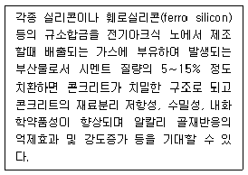
- 고로 슬래그
- 플라이 애시
- 폴리머
- 실리카 퓸
(정답률: 67%)
47. 포틀랜드시멘트 클링커 화합물에 대한 설명으로 옳은 것은?
- 포틀랜드시멘트 클링커는 단일조성이 아니라 알라이트(Alite), 베라이트(Belite), 석회(CaO), 산화철(Fe2O3)이라 하는 4가지의 주요 화합물로 구성된다.
- C3A는 수화속도가 매우 느리고 발열량이 적으며 수축도 작다.
- C3S 및 C2S는 시멘트 강도의 대부분을 지배하는 것으로 그 합이 포틀랜드 시멘트에서는 70∼80% 정도이다.
- 육각형 모양을 한 알라이트는 2CaOㆍSiO2(C2S)를 주성분으로 하며 다량의 Al2O3 및 MgO 등을 고용한 결정이다.
(정답률: 56%)
48. 굵은골재의 최대치수가 50mm인 경량골재를 사용하여 밀도 및 흡수율 시험을 실시하고자 할 때 1회 시험에 사용하는 시료의 최소 질량은? (단, 경량 굵은골재의 추정밀도는 1.4g/cm3)
- 2.0kg
- 2.5kg
- 2.8kg
- 5.0kg
(정답률: 43%)
49. 대폭파 또는 수중폭파를 동시에 실시하기 위해 뇌관 대신에 사용하는 것은?
- DDNP
- 도폭선
- 도화선
- 데토릴
(정답률: 67%)
50. 아스팔트 포장용 혼합물의 아스팔트 함유량 시험(KS F 2354)에 사용되는 시약이 아닌 것은?
- 염화메틸렌
- 탄산암모늄 용액
- 황산나트륨
- 삼염화에틸렌
(정답률: 53%)
51. 재료의 역학적 성질 중 재료를 얇게 펴서 늘일 수 있는 성질을 무엇이라 하는가?
- 인성
- 강성
- 전성
- 취성
(정답률: 65%)
52. 조립률이 3.43인 모래 A와 조립률이 2.36인 모래 B를 혼합하여 조립률 2.80의 모래 C를 만들려면 모래 A와 B는 얼마를 섞어야 하는가? (단, A：B의 질량비)
- 41(%)：59(%)
- 43(%)：57(%)
- 40(%)：60(%)
- 38(%)：62(%)
(정답률: 48%)
53. 다음 혼화재료에 대한 설명으로 틀린 것은?
- 사용량에 따라 혼화재와 혼화제로 나뉜다.
- 콘크리트의 성능을 개선, 향상시킬 목적으로 사용되는 재료이다.
- 혼화재료를 사용할 때는 반드시 시험 또는 검토를 거쳐 성능을 확인하여야 한다.
- 혼화제는 비록 시멘트 사용량의 3% 이하로 소요되지만 콘크리트의 배합계산시 고려해야한다.
(정답률: 65%)
54. 암석의 구조에 대한 설명으로 틀린 것은?
- 절리：암석 특유의 천연적으로 갈라진 금으로 화성암에서 많이 보임
- 석목：암석의 갈라지기 쉬운 면을 말하며 돌눈이라고도 함
- 층리：암석을 구성하는 조암광물의 집합상태에 따라 생기는 눈 모양
- 편리：변성암에서 된 절리로 암석이 얇은 판자모양 등으로 갈라지는 성질
(정답률: 64%)
55. 석유계아스팔트로서 연환점이 높고 방수공사용으로 가장 많이 사용되는 재료는?
- 스트레이트 아스팔트
- 블로운 아스팔트
- 레이크 아스팔트
- 록 아스팔트
(정답률: 54%)
56. 건설용 재료로 목재를 사용하기 위하여 목재를 건조시키는 목적 및 효과로 틀린 것은?
- 가공성을 향상 시킨다.
- 균류의 발생을 방지할 수 있다.
- 수축균열 및 부정변형을 방지할 수 있다.
- 목재의 중량을 경감시킬 수 있다.
(정답률: 56%)
57. 아래의 표에서 설명하는 아스팔트의 성질은?
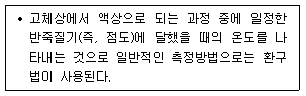
- 연화점
- 인화점
- 신도
- 연소점
(정답률: 68%)
58. 시멘트 분말도가 모르타르 및 콘크리트 성질에 미치는 영향을 설명한 것으로 옳은 것은?
- 분말도가 높을수록 강도 발현이 늦어진다.
- 분말도가 높을수록 블리딩이 많게 된다.
- 분말도가 높을수록 수화열이 적게 된다.
- 분말도가 높을수록 건조수축이 크게 된다.
(정답률: 57%)
59. 전체 6kg의 굵은골재로 체가름 시험을 실시한 결과가 아래의 표와 같을 때 이 골재의 조립률은?
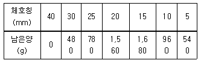
- 6.72
- 6.93
- 7.14
- 7.38
(정답률: 36%)
60. 암석의 분류중 성인(지질학적)에 의한 분류의 결과가 아닌 것은?
- 화성암
- 퇴적암
- 점토질암
- 변성암
(정답률: 70%)
4과목: 토질 및 기초
61. rt＝1.9t/m3, ø＝30°인 뒤채움 모래를 이용하여 8m 높이의 보강토 옹벽을 설치하고자 한다. 폭 75mm, 두께 3.69mm의 보강띠를 연직방향 설치간격 Sv＝0.5m, 수평방향 설치간격 Sh＝1.0m로 시공하고자 할 때, 보강띠에 작용하는 최대힘 Tmax의 크기를 계산하면?
- 1.53t
- 2.53t
- 3.53t
- 4.53t
(정답률: 32%)
62. 흙의 다짐에 관한 설명으로 틀린 것은?
- 다짐에너지가 클수록 최대건조단위중량(γdmax)은 커진다.
- 다짐에너지가 클수록 최적함수비(Wopt)는 커진다.
- 점토를 최적함수비(Wopt)보다 작은 함수비로 다지면 면모구조를 갖는다.
- 투수계수는 최적함수비(Wopt) 근처에서 거의 최소값을 나타낸다.
(정답률: 57%)
63. 다짐되지 않은 두께 2m, 상대밀도 40%의 느슨한 사질토 지반이 있다. 실내시험결과 최대 및 최소 간극비가 0.80, 0.40으로 각각 산출되었다. 이 사질토를 상대 밀도 70%까지 다짐할 때 두께의 감소는 약 얼마나 되겠는가?
- 12.4cm
- 14.6cm
- 22.7cm
- 25.8cm
(정답률: 34%)
64. 말뚝 지지력에 관한 여러 가지 공식 중 정역학적 지지력 공식이 아닌 것은?
- Dör 공식
- Terzaghi 공식
- Meyerhof 공식
- Engineering-News 공식
(정답률: 65%)
65. 다음 그림에서 A점의 간극 수압은?
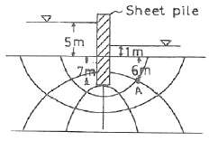
- 4.87t/m2
- 6.67t/m2
- 12.31t/m2
- 4.65t/m2
(정답률: 40%)
66. 아래 표의 설명과 같은 경우 강도정수 결정에 적합한 삼축 압축 시험의 종류는?
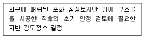
- 압밀배수 시험(CD)
- 압밀비배수 시험(CU)
- 비압밀비배수 시험(UU)
- 비압밀배수 시험(UD)
(정답률: 55%)
67. 단위중량이 1.8t/m3인 점토지반의 지표면에서 5m되는 곳의 시료를 채취하여 압밀시험을 실시한 결과 과압밀비(over consolidation ratio)가 2임을 알았다. 선행압밀압력은?
- 9t/m2
- 12t/m2
- 15t/m2
- 18t/m2
(정답률: 38%)
68. 연약지반 위에 성토를 실시한 다음, 말뚝을 시공하였다. 시공 후 발생될 수 있는 현상에 대한 설명으로 옳은 것은?
- 성토를 실시하였으므로 말뚝의 지지력은 점차 증가한다.
- 말뚝을 암반층 상단에 위치하도록 시공하였다면 말뚝의 지지력에는 변함이 없다.
- 압밀이 진행됨에 따라 지반의 전단강도가 증가되므로 말뚝의 지지력은 점차 증가된다.
- 압밀로 인해 부의 주면마찰력이 발생되므로 말뚝의 지지력은 감소된다.
(정답률: 61%)
69. 점토지반으로부터 불교란 시료를 채취하였다. 이 시료는 직경 5cm, 길이 10cm이고, 습윤무게는 350g이고, 함수비가 40%일 때 이 시료의 건조단위무게는?
- 1.78g/cm3
- 1.43g/cm3
- 1.27g/cm3
- 1.14g/cm3
(정답률: 33%)
70. 다음 그림과 같은 p-q다이아그램에서 선이 파괴선을 나타낼 때 이 흙의 내부마찰각은?
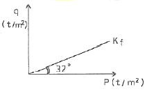
- 32°
- 36.5°
- 38.7°
- 40.8°
(정답률: 39%)
71. 사질토 지반에 축조되는 강성기초의 접지압 분포에 대한 설명 중 맞는 것은?
- 기초 모서리 부분에서 최대 응력이 발생한다.
- 기초에 작용하는 접지압 분포는 토질에 관계 없이 일정하다.
- 기초의 중앙 부분에서 최대 응력이 발생한다.
- 기초 밑면의 응력은 어느 부분이나 동일하다.
(정답률: 59%)
72. 두께 2m인 투수성 모래층에서 동수경사가 1/10 이고, 모래의 투수계수가 5×10-2cm/sec라면 이 모래층의 폭 1m에 대하여 흐르는 수량은 매분당 얼마나 되는가?
- 6,000cm3/min
- 600cm3/min
- 60cm3/min
- 6cm3/min
(정답률: 35%)
73. 단면적 20cm2, 길이 10cm의 시료를 15cm의 수두차로 정수위 투수시험을 한 결과 2분동안에 150cm3의 물이 유출되었다. 이 흙의 비중은 2.67이고, 건조중량이 420g이었다. 공극을 통하여 침투하는 실제 침투유속 는 약 얼마인가?
- 0.018cm/sec
- 0.296cm/sec
- 0.437cm/sec
- 0.628cm/sec
(정답률: 34%)
74. 평판재하실험 결과로부터 지반의 허용지지력 값은 어떻게 결정하는가?
- 항복강도의 1/2, 극한강도의 1/3 중 작은 값
- 항복강도의 1/2, 극한강도의 1/3 중 큰 값
- 항복강도의 1/3, 극한강도의 1/2 중 작은 값
- 항복강도의 1/3, 극한강도의 1/2 중 큰 값
(정답률: 49%)
75. Vane Test에서 Vane의 지름 5cm, 높이 10cm, 파괴시 토오크가 590kgㆍcm일 때 점착력은?
- 1.29kg/cm2
- 1.57kg/cm2
- 2.13kg/cm2
- 2.76kg/cm2
(정답률: 32%)
76. 두 개의 규소판 사이에 한 개의 알루미늄판이 결합된 3층구조가 무수히 많이 연결되어 형성된 점토광물로서 각 3층구조 사이에는 칼륨이온(K+)으로 결합되어 있는 것은?
- 몬토릴로나이트(montmorillonite)
- 할로이사이트(halloysite)
- 고령토(kaolinite)
- 일라이트(illite)
(정답률: 57%)
77. ø＝33°인 사질토에 25° 경사의 사면을 조성하려고 한다. 이 비탈면의 지표까지 포화되었을 때 안전율을 계산하면? (단, 사면 흙의 γat＝1.8t/m3)
- 0.62
- 0.70
- 1.12
- 1.41
(정답률: 38%)
78. 아래 그림에서 A점 흙의 강도정수가 c＝3t/m2, ＝30°일 때 A점의 전단강도는?
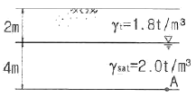
- 6.93t/m2
- 7.39t/m2
- 9.93t/m2
- 10.39t/m2
(정답률: 44%)
79. 얕은 기초에 대한 Terzaghi의 수정지지력 공식은 아래의 표와 같다. 4m×5m의 직사각형 기초를 사용할 경우 형상계수 α와 β의 값으로 옳은 것은?
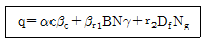
- α＝1.2, β＝0.4
- α＝1.28, β＝0.42
- α＝1.24, β＝0.42
- α＝1.32, β＝0.38
(정답률: 41%)
80. 연약지반에 구조물을 축조한 때 피조미터를 설치하여 과잉간극수압의 변화를 측정했더니 어떤 점에서 구조물 축조 직후 10t/m2이었지만, 4년 후는 2t/m2이었다. 이때의 압밀도는?
- 20%
- 40%
- 60%
- 80%
(정답률: 47%)
프리스트레스트 콘크리트는 철근콘크리트와 달리 철근 대신 강화된 프리스트레스 선을 사용하여 강도를 높입니다. 따라서 철근콘크리트에 비해 강성이 크고 변형 및 진동이 작아지는 장점이 있습니다. 또한 복원성이 크기 때문에 변형 후에도 원래의 형태로 복구될 수 있습니다. 또한 복부의 폭을 얇게 할 수 있어서 부재의 자중이 경감되는 등의 장점이 있습니다.